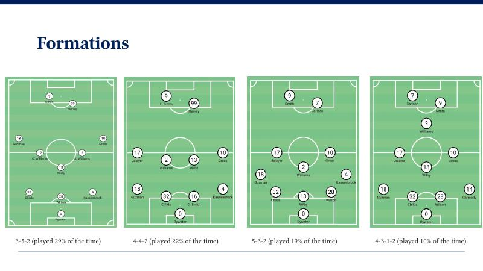
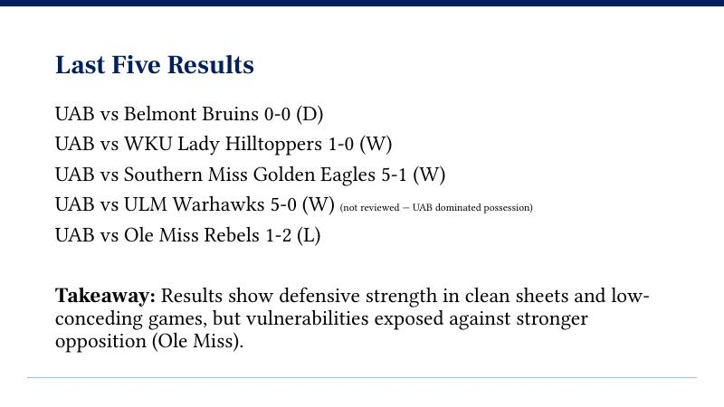
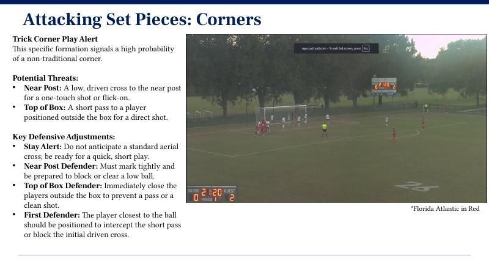
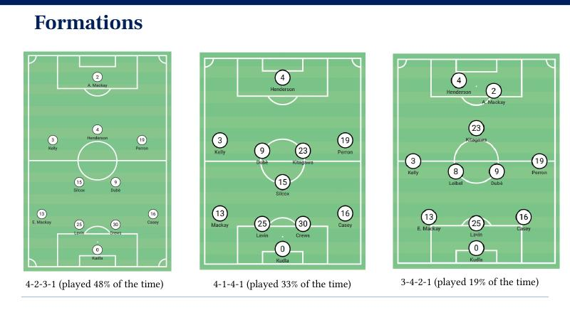
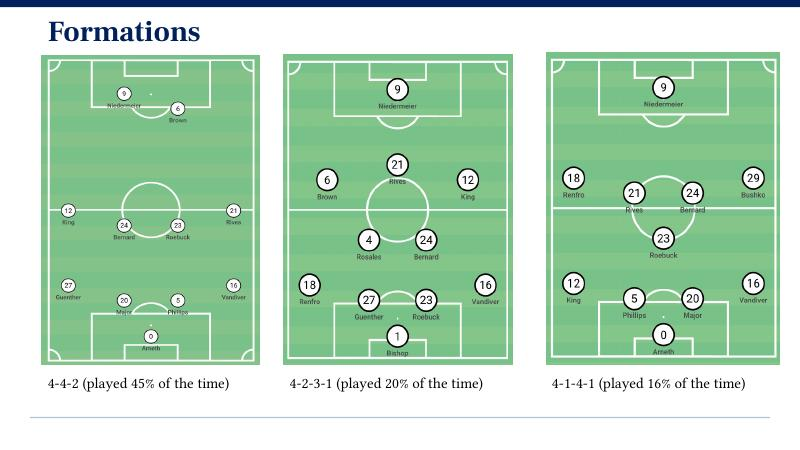
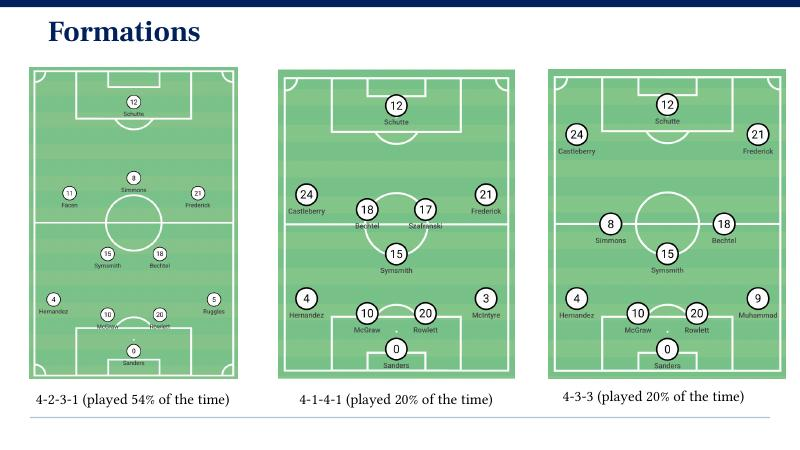

Chances created
Lamar
I tracked formation changes and pressing sequences across opponents to understand how Lamar won the ball and built attacks.
Sept. 7 · Rice won 2–0
Rice Sports Analytics Team · Fall 2025
As an analyst, I prepared presentations for the team before matches. Some focused on how opponents created chances. Others looked at defensive duels near the box or how a team organized its set pieces.
Rice finished with 10 wins, 4 losses and 6 draws. In the American tournament, the Owls beat Tulsa 1–0, advanced past South Florida on penalties, then fell 1–0 to UTSA in overtime in the final. Rice Athletics match reports

Chances created
I tracked formation changes and pressing sequences across opponents to understand how Lamar won the ball and built attacks.
Sept. 7 · Rice won 2–0

Chances defended
I mapped where UAB contested the ball and how its midfield press changed once opponents reached the final third.
Sept. 11 · 3–3 draw

Set pieces
I reviewed Florida Atlantic’s set pieces ahead of the conference match.
Sept. 18 · Rice won 2–1

Chances created
I reviewed Memphis’s formations and the attacking patterns that produced chances most often.
Sept. 28 · Rice lost 0–2

Chances defended
I looked at duels won and lost near the box to identify where pressure could open up Charlotte’s compact defense.
Oct. 9 · 1–1 draw

Chances created
I reviewed how North Texas created scoring chances ahead of Rice’s match in Denton.
Oct. 19 · 2–2 draw

Chances created
I studied Tulsa’s short buildup and identified areas to press for turnovers.
Oct. 30 · Rice lost 0–4. Nov. 3 · Rice won the tournament rematch 1–0.
Quarterfinal · Nov. 3
Four days after losing at Tulsa, Rice won the rematch in Florida.
Semifinal · Nov. 6
Rice advanced 6–5 on penalties.
Final · Nov. 9
UTSA scored in overtime. Rice finished the tournament as runner-up.